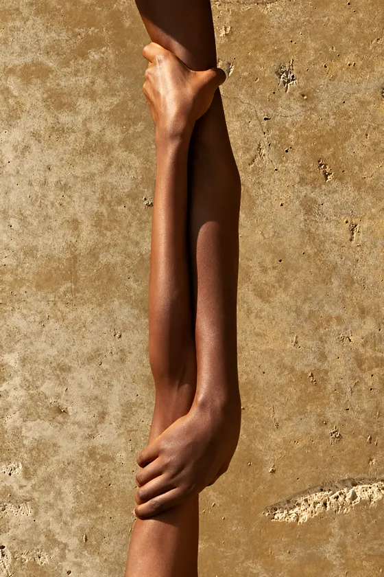
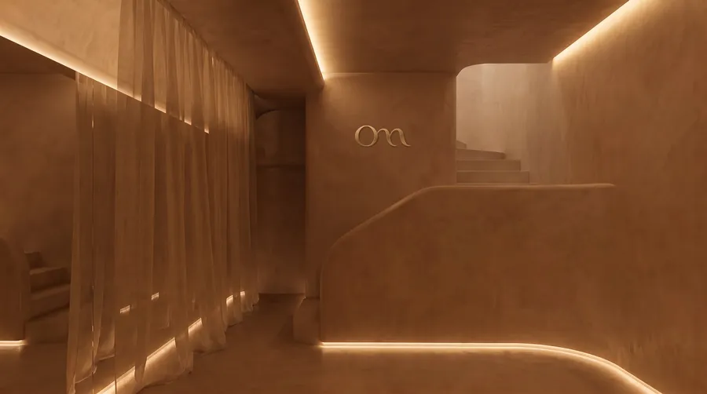

Mente y emociones
Psicoterapia EMDR
Un modelo de psicoterapia con amplia evidencia científica que integra cuerpo y emociones, para procesar lo que mantiene tu sistema nervioso en alerta.
Con método propio y base científica
Ya atendemos online y en consulta · Apertura del centro en 2027
Para quién es Om
Puede que hayas probado terapias y tratamientos, o incluso cambiado tus hábitos por completo. Cada cosa por su lado aporta algo, pero el malestar vuelve. A menudo lo que falta es trabajar la base: un sistema nervioso desregulado.
Opresión en el pecho o nudo en la garganta, colon irritable y digestiones difíciles, contracturas o bruxismo, migrañas, problemas de piel o menstruales. Síntomas que se repiten o empeoran con el estrés, como los brotes de una enfermedad autoinmune.
Ansiedad, mente acelerada, nudo en el estómago o sensación de no poder parar nunca.
Respondes de forma desproporcionada o dejas de sentir.
Insomnio, cansancio o agotamiento aunque logres dormir.
Te cuesta poner límites o priorizarte, temes que te dejen o repites vínculos que te hacen daño.
Te exiges demasiado, te criticas o sientes que nada de lo que haces es suficiente.
Tristeza, vacío o ganas de llorar sin saber bien por qué.
Por qué regularse
La psiconeuroinmunología estudia cómo se comunican el sistema nervioso, el hormonal y el inmunitario. Hoy sabemos que el estrés sostenido mantiene activadas las respuestas de defensa del organismo, lo que favorece la inflamación de bajo grado y el estrés oxidativo. La investigación los relaciona con diversas enfermedades y problemas crónicos.
Sobrecarga, soledad o experiencias difíciles y traumáticas que todavía no se han podido procesar.
El eje del estrés (HHA) y el sistema nervioso simpático se mantienen activados demasiado tiempo.
El sistema inmunitario se mantiene activado y aumenta el estrés oxidativo.
Molestias digestivas, dolor, problemas de piel, insomnio o bajo estado de ánimo. Aparecen en distintas partes del cuerpo, pero pueden compartir una misma base.
Por eso tratar cada síntoma por separado alivia, pero a menudo no basta. En Om trabajamos la base del problema de forma integrativa, teniendo en cuenta mente, cuerpo y hábitos.
Lee la explicación completa, con las investigaciones
Este trabajo complementa tu tratamiento médico, no lo sustituye.
Qué es regularse
Tu sistema nervioso cambia de estado a lo largo del día para protegerte. El problema aparece cuando se queda atrapado en la alerta o en el bloqueo durante meses o años.
Regularse no es estar siempre en calma. Es tener más margen para sostener lo que te pasa y recuperar el equilibrio con más facilidad.
Cómo trabajamos
Sabrás en cada momento qué hacemos, por qué y cómo vas avanzando.
15 min · sin coste
Nos cuentas qué te pasa y vemos si el método de Om es adecuado para ti.
Entrevista y medición
Una entrevista en profundidad, presencial u online, y una medición de cómo está tu sistema nervioso.
Acordada contigo
Te explicamos lo que vemos y lo que te proponemos, y lo ajustamos juntos/as a tu ritmo.
Tratamiento y hábitos
Combinamos las herramientas que necesitas para que recuperes el equilibrio y puedas sostenerlo en el tiempo.
Periódicamente
Revisamos tu evolución con datos concretos y ajustamos tu itinerario.
El objetivoUna ventana de tolerancia más amplia y la capacidad de volver a tu eje por tu cuenta.
El método
Acompañamos a adultos, niños, adolescentes y parejas.
Mente y emociones
Un modelo de psicoterapia con amplia evidencia científica que integra cuerpo y emociones, para procesar lo que mantiene tu sistema nervioso en alerta.
Cuerpo
Un enfoque terapéutico centrado en las sensaciones del cuerpo, para liberar la sobrecarga del estrés y el trauma, y restablecer la capacidad natural de autorregulación del sistema nervioso.
Sistema nervioso
Una técnica no invasiva de microcorrientes, como complemento para favorecer la regulación del sistema nervioso.
Salud física
Un enfoque de la medicina basado en la evidencia que tiene en cuenta la relación entre el sistema nervioso y los síntomas físicos, para tratarlos de forma coordinada.
Vida diaria
Prácticas reguladoras, como yoga nidra, respiración, meditación o baños de sonido, y grupos de encuentro y apoyo, para sostener en tu día a día lo trabajado en el tratamiento.
Todo integrado
Combina las herramientas que necesitas en un itinerario personalizado, con medición de tu evolución en cada etapa.
Cómo somos
Sabemos que la presión y la exigencia van en contra de la regulación. Por eso, cada paso del proceso busca ser flexible y adaptarse a tu ritmo.
Precios claros desde el principio, sin bonos que te hagan pagar más por venir con menos frecuencia.
Métodos con respaldo científico, y te explicamos por qué pueden servirte.
Un trato humano, sin etiquetas ni promesas de resultados rápidos.
El mejor tratamiento es el que puedes sostener, por eso tu itinerario se define contigo. Trabajamos con lo que hoy es posible para ti y a tu ritmo.

Equipo
Profesionales de la psicología, la medicina y la psiconeuroinmunología (PNI) que colaboran compartiendo método, ética y criterio, coordinados alrededor de cada persona.
Fundadora: Rocío Vilches

El espacio
Estamos preparando el centro en Alella con el mismo cuidado que ponemos en el tratamiento.
Cada detalle está pensado para crear un ambiente que ayude a tu sistema nervioso a regularse. Por eso usamos luz cálida y materiales orgánicos, prescindimos de perfumes y ambientadores químicos, y cuidamos que los espacios sean silenciosos.
En la sala de espera encontrarás un rincón para reconfortarte con una bebida caliente y un buen libro. Y no solo el día de tu cita: si formas parte de la comunidad Om, puedes venir también fuera de tus horarios a tomarte una infusión y leer con calma. Queremos que Om sea, además, un lugar de acogida y encuentro.
Preguntas frecuentes
Es la capacidad del sistema nervioso para salir de la alerta o del bloqueo y volver a un estado de calma y presencia. Cuando esa capacidad se resiente, aparecen ansiedad, problemas de sueño, molestias físicas o desconexión. En Om trabajamos para recuperarla con terapia psicológica, trabajo corporal y hábitos.
Que no tratamos la mente, el cuerpo y los hábitos por separado. Tras una valoración, combinamos las herramientas que necesita cada persona en un itinerario personalizado y medimos su evolución.
Empieza con una charla gratuita de 15 minutos por WhatsApp o videollamada. Nos cuentas qué te pasa y te decimos con honestidad si Om es el lugar adecuado o si te conviene otro profesional.
Om está dirigido por Rocío Vilches, psicóloga sanitaria colegiada n.º 34041, que coordina un equipo de profesionales que comparten método, ética y criterio.
Sí. La terapia psicológica puede hacerse online o de forma presencial. Las herramientas corporales, como el trabajo somático o la neuromodulación, son presenciales.
En Alella, en el Maresme (Barcelona). Ya atendemos online y en consulta, y la apertura del centro está prevista para 2027.
Depende de cada persona. Después de la valoración recibes una propuesta por escrito con el itinerario y lo que vamos a medir, y revisamos contigo la evolución periódicamente para ajustarlo.
Es una terapia psicológica con amplia evidencia científica para procesar experiencias difíciles o traumáticas que siguen activando el cuerpo en el presente.
Contacto
Escríbenos por WhatsApp y te respondemos con los horarios disponibles. Sin compromiso.
Escribir por WhatsApp